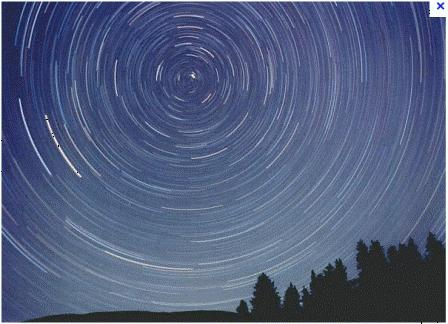
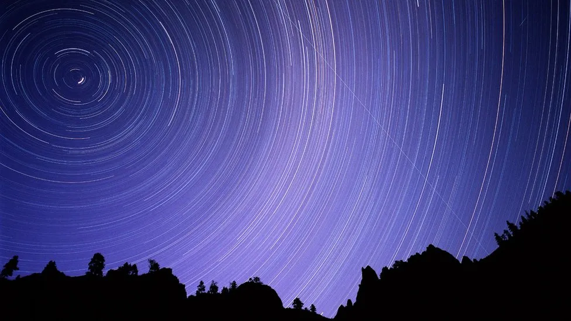

Les cercles de lumière correspondent aux sillages des étoiles de l'hémisphère Nord. En fait, les étoiles ne bougent pas, mais la position de l'appareil photographique change à mesure que la Terre tourne sur son axe de rotation.
Cette photo en pose longue a été prise à la fin de l'été en Colombie Britanique au Canada
 Lien vers Aller plus loin ... Lien vers la page d'acceil